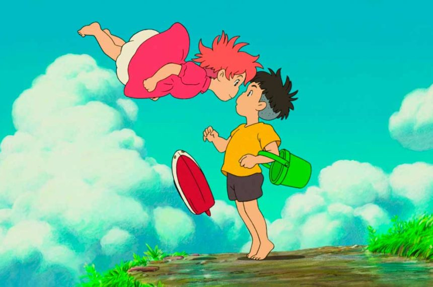
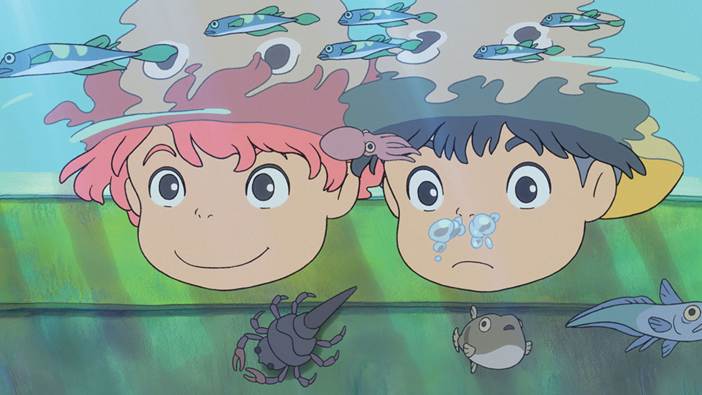

Ponyo - O filme

Uma Amizade que Veio do Mar apresenta o mundo subaquático vibrante, onde a peixinho-dourado Brunhilde (Ponyo) foge de seu pai, o feiticeiro Fujimoto, em uma água-viva. Ela se desvia de um barco, fica presa em uma garrafa e é resgatada por Sosuke, um menino de 5 anos que a apelida de Ponyo.
Pontos do filme

- A Fuga
- O Encontro
- A Transformação
- O Conflito